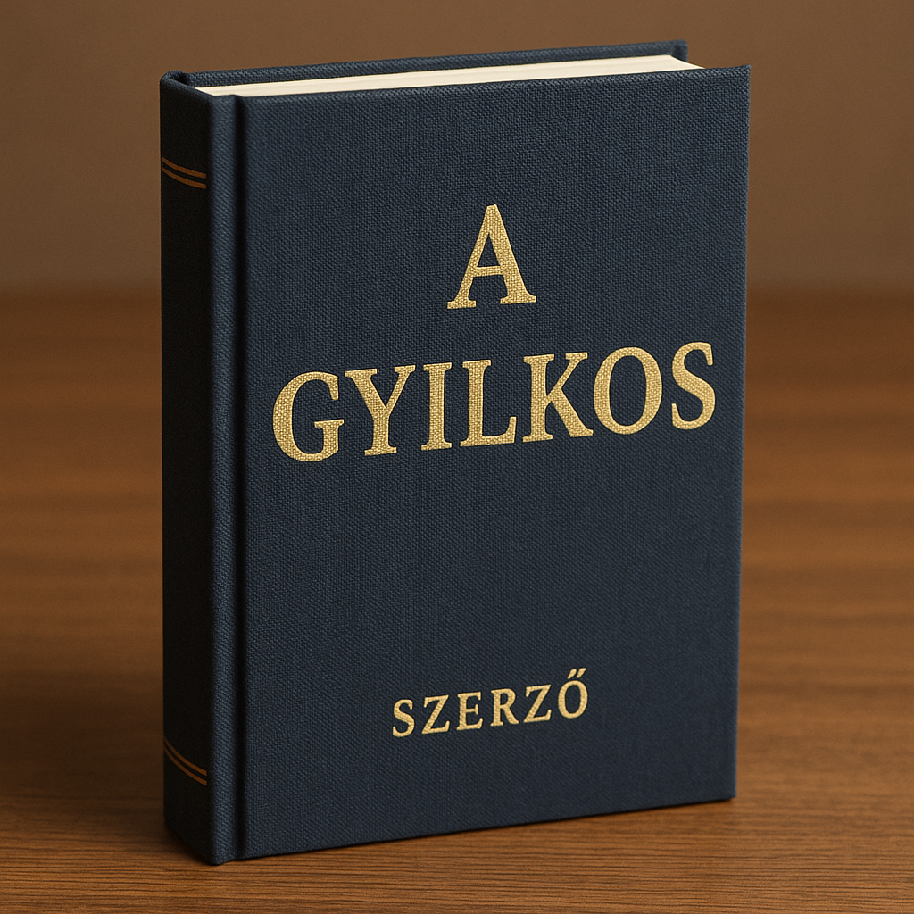

Vidd el az alábbi könyveket akár 20% kedvezménnyel
A Sigma című könyv egy izgalmas, akciódús sci-fi thriller, amely a jövő technológiai világában játszódik. A történet középpontjában egy titkos társaság áll, amely a globális hatalom megszerzésére tör, miközben egy fiatal tudós felfedezi a cég sötét titkait. A könyv tele van feszültséggel, rejtélyekkel és meglepő fordulatokkal, amelyek folyamatosan fenntartják az olvasó érdeklődését.
A gyilkos című könyv Agatha Christie egyik legismertebb detektívregénye, amely Hercule Poirot, a híres belga nyomozó főszereplésével készült. A történet egy bonyolult gyilkosságot követ, amely egy elegáns angliai villában zajlik. A gyilkos első pillantásra rejtve marad, de Poirot, aki a helyszínre érkezik, aprólékosan és logikusan összerakja a nyomokat, hogy felfedje az igazságot. A regény izgalmasan építkezik, tele van rejtélyekkel és félrevezető információkkal, miközben a történet központjában a nyomozó éles elméje és pszichológiai érzékenysége áll. A könyv az emberi természet és a motivációk mélyebb megértésére is rávilágít, miközben a feszültség és a meglepő fordulatok végig fenntartják az olvasó figyelmét.
